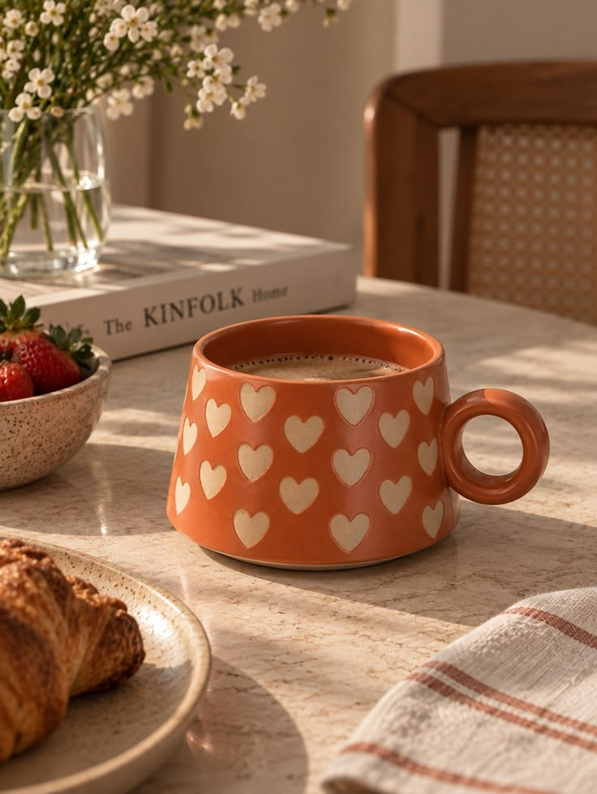
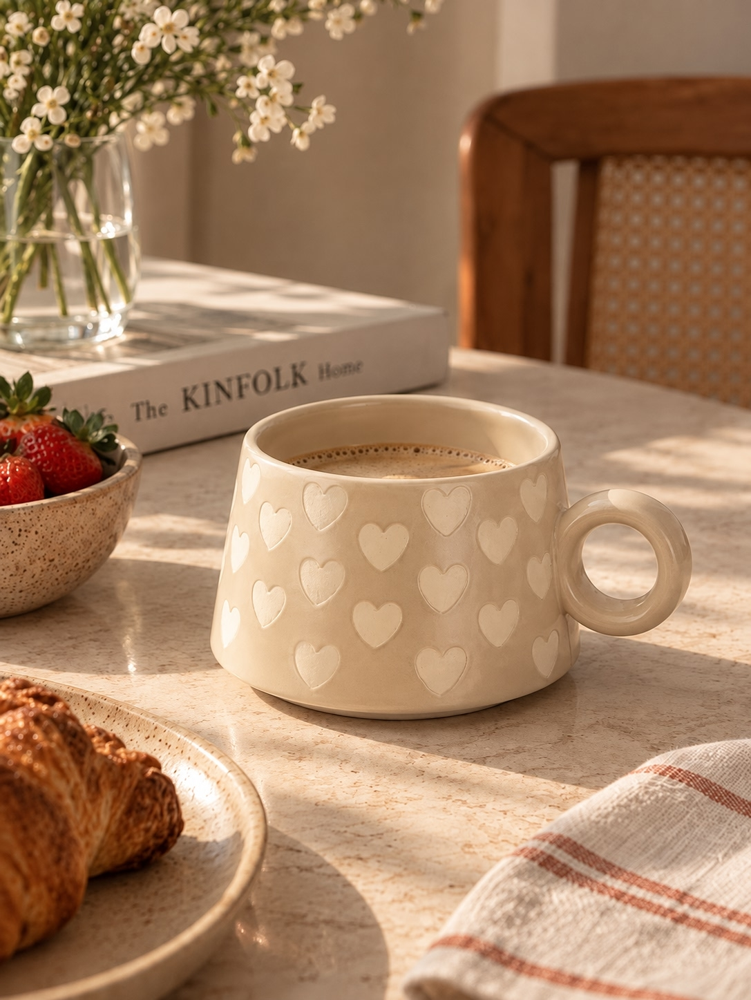
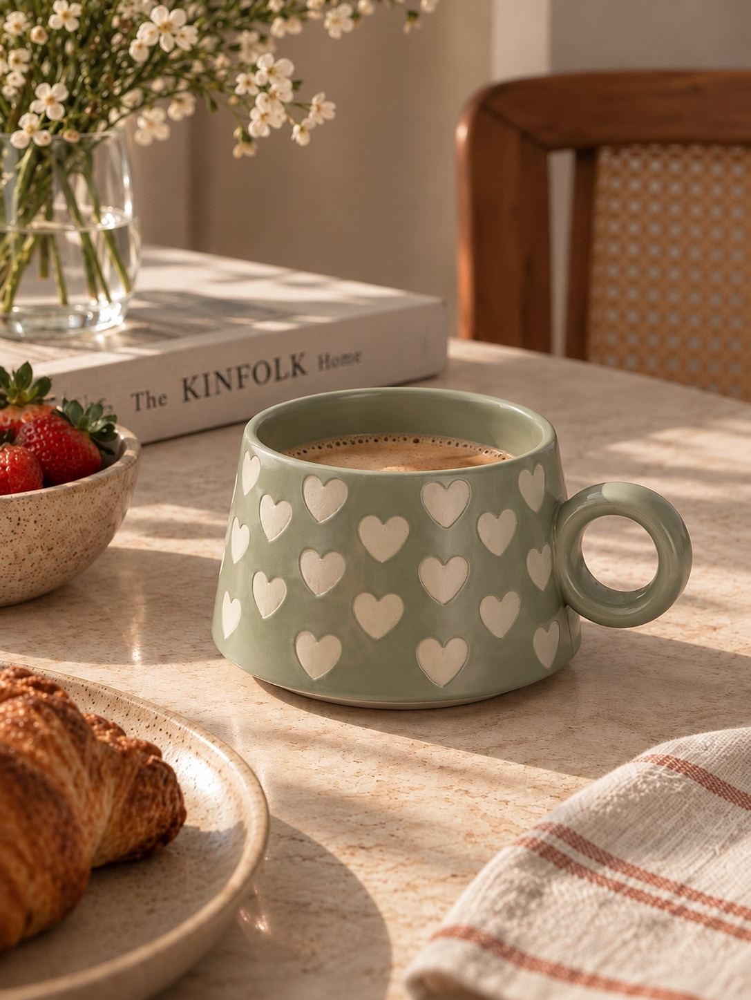

Кружка керамическая «Тёплый вечер»
590 руб.
Артикул: KR-1024
Уютная керамическая кружка ручной росписи. Держит тепло напитка до 40 минут, подходит для посудомоечной машины и микроволновой печи.
Характеристики
| Материал | Керамика |
|---|---|
| Объём | 350 мл |
| Микроволновая печь | Да |
| Посудомоечная машина | Да |
| Вес | 420 г |
Преимущества
- Ручная роспись — каждый рисунок уникален
- Плотная керамика держит тепло дольше стекла
- Гарантия на сколы и трещины — 1 год